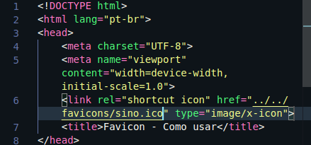

Um favicon na maioria dos casos é um icon que irá
representar seu site
(seja uma logo do site ou
uma marca registrada)
O aconselhado quando você for ultilizar um favicon
é usar um arquivo no
formato .ico,
em alguns programas de dição de imagens disponibiliza essa
opçõe em modo de exportação, já rm outros (como o
gimp) não disponibiliza,
mas para
isso, temos alguns outros meios:
Existe alguns sites em que diposnibiliza alguns icons e
outros em que você mesmo
pode criar seu próprio icon:
Favicon.io:
você tem a opção de tranformar uma imagem para .ico,
escolher um
emoji(🔔) como .ico
Favicon.cc:
nele você mesmo pode criar seu próprio icon e exportar como
.ico
Mas agora vamos aprender como ultiliza-lo no nosso arquivo
HTML.
Antes da tag <title> iremos ultilizar a tag <link>
que na prática será assim:
<link rel="shortcut icon" href="" type="image/x-icon">
O atributo href="" especifica a URL do recurso
vinculado, que no caso será o
caminho do seu arquivo (favicon)
que pode estar em uma pasta externa ou interna.
Veja o code de exemplo abaixo:

Agora olhe para o title.